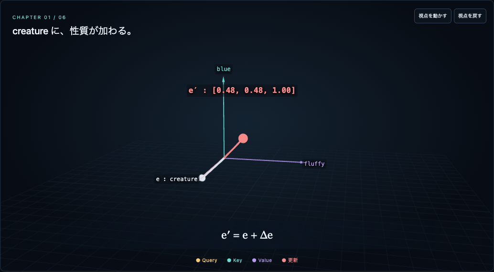
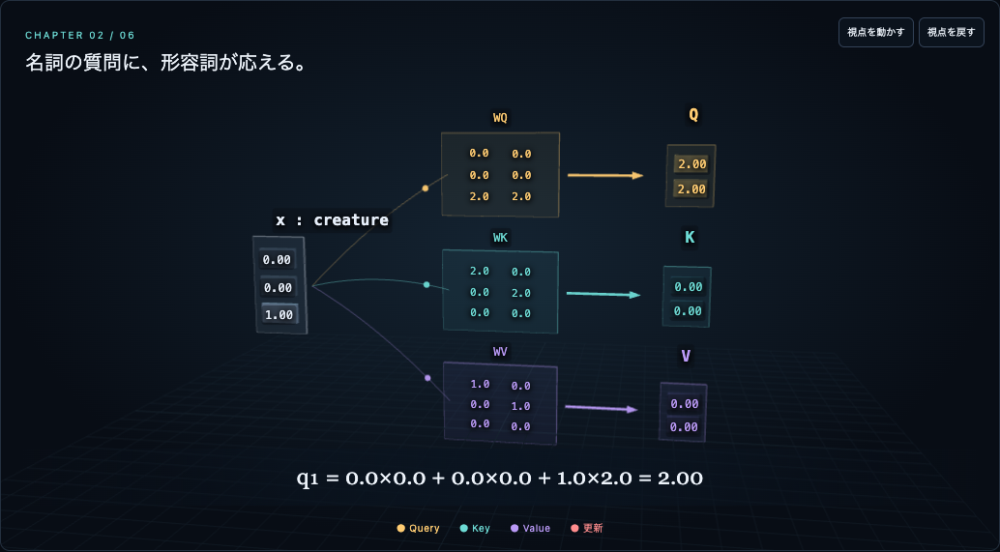
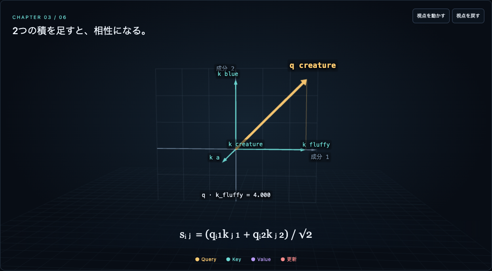
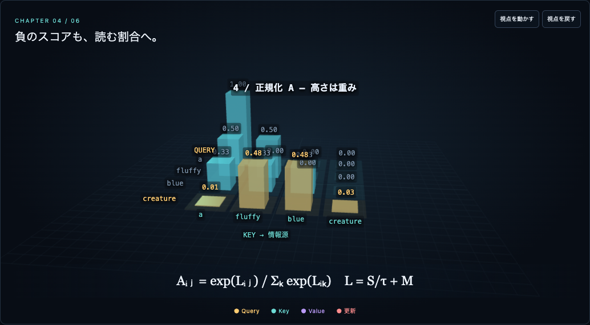
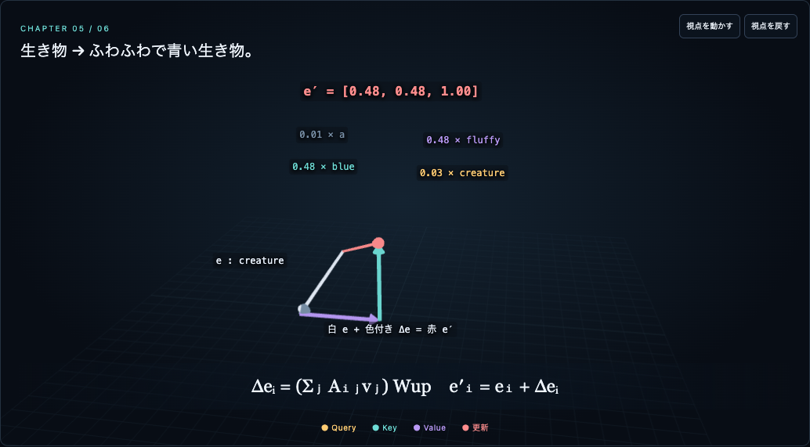
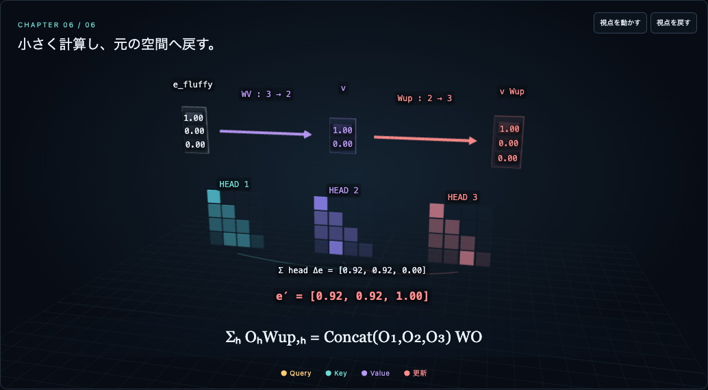
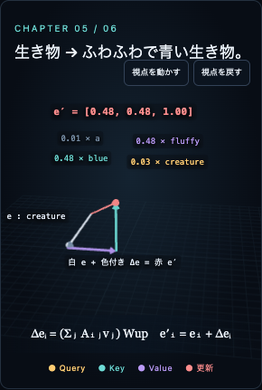

← 教材へ改修内容の検証
2026-09-09。ChromeのPC 1440px、モバイル相当390px／320pxで6章を検証。実機スマホ・Safari・Firefoxは未確認です。
- 82項目：18章状態のWebGL描画、横はみ出し、4段階の行列表、Head・Query・温度・マスク、Value倍率、再生／停止、シーク、集中モード／Escape、リセット。
- 4,901件の数値比較・性質確認：独立した成分別の計算と照合。Attention、Value down/up、単一Head残差、Multi-headの和とConcat投影の一致。72設定を比較。
- 初期状態：creatureのAは約[0.00917,0.48119,0.48119,0.02844]。単一Head更新後は[0.47936,0.47936,1]。
- 150秒の全タイムラインを実際に2倍速で再生。150秒で停止し、4,505フレームを描画、ページ例外0件。
- 下の画像はこのContext版のローカル最終描画。旧版の検証画像ではありません。
これらは教材の表示・計算の検証であり、学習した言語モデルの精度評価ではありません。参照映像の完全再現を示すものでもありません。
6章の描画






320px幅

出典・再現した点と未再現部分